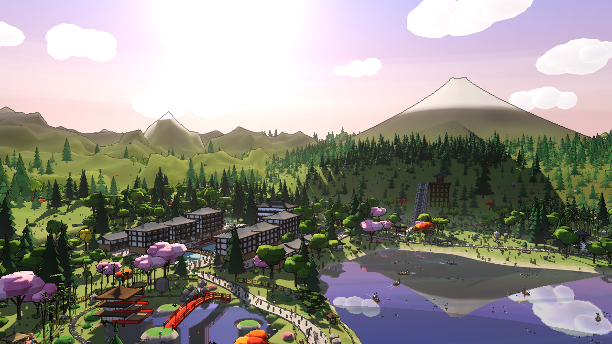

A real frame of the valley, rendered from the mockup with the interface switched off, at the 1280×720 design size. Everything the menu draws sits on this. The six outlines are measured, not sketched — each is where one 620×128 element actually lands, read off the running page by planting a point at each corner and taking its projection.
The outlines are not rectangles because the renderer yaws and rolls each plane in 3D. Do not build that warp in. Design each item as a flat 620×128 box; the perspective is applied to it afterwards. What the shapes tell you is how much of it there is — the roll is small, 3° at the top of the stack easing to −2° at the bottom, but the yaw is not: every item is about a tenth shorter at its far left end than at its near right end, so the left side of a design is the side that gets squeezed.
The wash over the left of the frame is #typeShade, an element that already exists in
the page and fades in with the menu. It is yours to keep, strengthen or throw away —
it is the current design's answer to legibility, not a fixed part of the world. If a variant needs
no shade at all, that is a better answer than this one.
| ITEM | ACCENT | TOP-LEFT (x, y) | ON SCREEN (near end) | ROLL |
|---|---|---|---|---|
| STUDY | #cfa45c | 150, 24 | 524 × 125 | +3.0° |
| DAILY | #e34a33 | 202, 141 | 523 × 122 | +2.5° |
| READING | #4f9d6b | 196, 257 | 495 × 116 | +1.0° |
| DRILLS | #c2344a | 245, 360 | 493 × 113 | +0.3° |
| JLPT | #5b86c4 | 239, 460 | 467 × 108 | −0.6° |
| RECORDS | #e0913a | 285, 563 | 464 × 106 | −2.1° |
Sizes are the near, right-hand end of each plane; the far left end of the same plane is about a tenth shorter. The stack runs from x 140 to x 757 and y 24 to y 658 — it owns the left three fifths of the frame and almost its whole height, and the right two fifths are lake and mountain and stay empty. A 620×128 element is displayed at 464–524 px wide, so everything on it is seen at 75–85% of the size you set it at, smallest at the bottom of the stack.

Same camera, 15:36 instead of 18:24, no shade at all. This is what the design has to survive: pale sky behind the top two items and sunlit green meadow behind the rest, with white cloud and pink blossom moving through it.
It goes further than this in both directions — the sun runs a full day cycle, and at night the same frame is deep blue with lit windows and fireflies in it. A design that only works on the sunset plate is not finished. The safe assumption is that any pixel behind the menu can be any luminance, so contrast has to come from something the item itself puts down.
Both plates are in assets/ at full size. Use
../assets/valley-sunset.png as the background of a variant rather than a flat
colour — a card that looks strong on dark grey and disappears here is the failure this
folder exists to prevent.